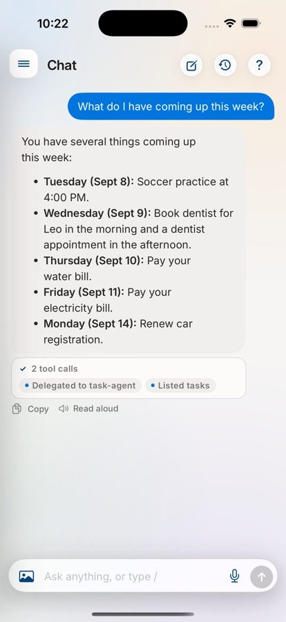
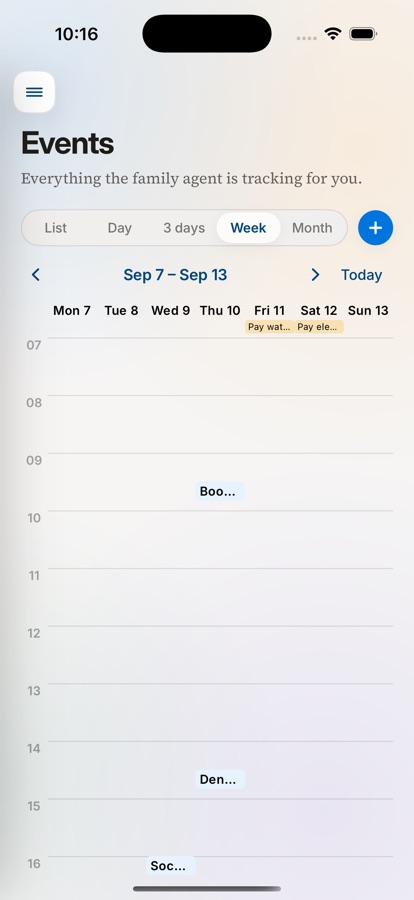
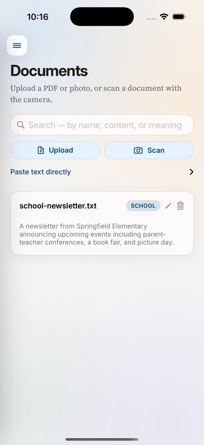
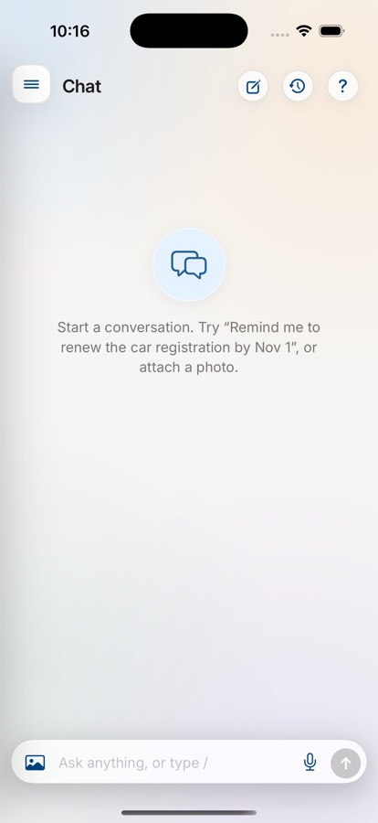

Family Agent keeps track of your family's documents, schedule and tasks — and it does it on a laptop in your house, talking to a model running on that same laptop.
Not a cloud service with a privacy policy you have to trust. There is no server to sign up for, because the server is yours.
Drop a bill, a school letter or a photo of a form into a watched folder. It reads it — text layer, or OCR for scans — pulls out the dates and amounts, and files it where you can search for it later by meaning, not just by filename.
Ask for something in plain language and it becomes an event. List, day, three-day, week and month views, and a shared sticky board for the things that aren't really events.
Everyone's documents, tasks and chats stay their own. What's shared is shared deliberately: the family board, group chats, and a vault you can open to the household.
A morning briefing, a bill nudge, a weekly review. Routines are saved instructions the assistant runs on its own and reports back on.
Ask for a chore chart or a trip budget splitter and it writes one — a small web tool, generated and served locally, that you can keep and improve by asking.
An encrypted vault for logins and two-factor codes. Only the secret is encrypted, so the list still works locked, and a stolen database gives up nothing.




Documents, chats, photos and voice clips go to the machine in your house and stop there. Inference runs against a local model. The developer has no access to any of it and there is no analytics of any kind.
Web search and command-line file processing can reach past your machine. Both are off unless an operator turns them on with an environment variable, and both are documented in full.
The whole thing is MIT-licensed and on GitHub, including the reasoning behind every non-obvious decision. Nothing about how your data is handled is something you have to take on faith.
macOS 12 or later, Apple Silicon. This machine hosts the server, so it should be one that's usually on and at home.
The assistant thinks with a model you pull yourself. It must support tool calling — that's a property of the model, not of this app.
The iOS and Android apps find the server over the local network, or you can point them at it by address.